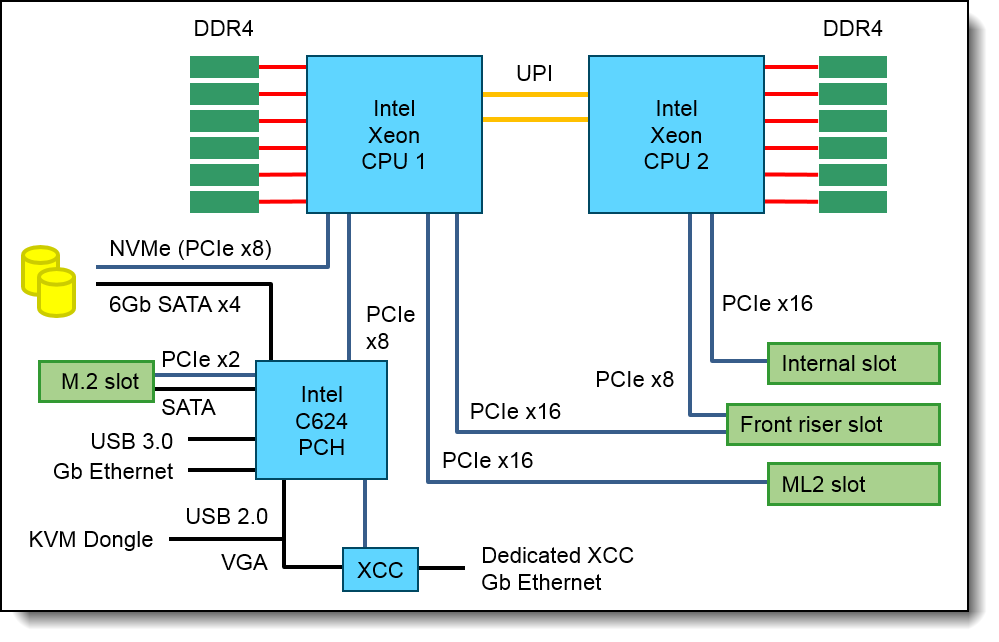
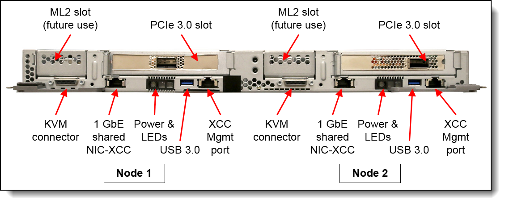

今年年初，联想爆出个新闻，联想AI战略2018落地首例：携手北大建设的全国首个温水水冷超算平台“未名一号”正式启用！.仔细看下，此将项目中使用的基础计算节点很可能是基于NeXtScale系统的SD650新一代的高密度液冷节点。简单从硬件设计和规格上对这款产品的特点进行下分析：
NeXtScale系统
- 6U高度12个节点
- 做HPC的方案，一般会采用刀片或者高密度的产品做计算节点。NeXtScale定位是一套高密度产品，而非刀片系统，因此就没有刀片系统可支持的整个刀箱的管理模块和交换模块，也就是说，一个箱子里的所有节点除了散热和供电是统一的，其余的均为相互独立。
- 三围：高263.3 mm (10.4 in.)，深: 914.5 mm (36 in.)，宽: 447 mm (17.6 in.)，深度超过常规服务器的深度（一般<800mm），因此在做批量部署时需要使用更深的机柜，对于机柜例旧的机房不是一个好消息。
SD650节点
液冷范围
- CPU、内存，还单独设计了一个可以使用液冷散热的OPA网卡。
- 号称PUE为1.1
CPU
- 可以支持带F的CPU型号，即支持CPU内集成Omni-Path 100G网络芯片。这个系列的CPU，是Intel skylake系列第一次新出的规格，而很可能也是最后一次规格。支持此类CPU，需要在主板硬件和机构上都做单独的设计，而且需要有单独配套的线缆与接口卡，很显然联想在这个系统上都做了。也很明显，这个系统真的是专为HPC而生。
- CPU兼容性列表里虽然支持了最高规格的205W的CPU，且号称可支持未来的245W CPU，却没有支持低TDP但是主频优化型的6144或者6146，可能是在散热上也是有风险。
内存
- 单节点12通道12条内存设计，而市面上常规双路的刀片或者高密度产品一般是24条或者16条内存设计，显然SD650在内存扩展性上是做了“舍”的，尽管通道数没有缩水，但可支持的最大容量只能是其他产品的75%甚至50%
存储
- 只支持SSD、不支持传统硬盘是一个亮点，也是一个明显的短板；
- 可支持2个7mm厚的SATA SSD，或者一个15mm厚的U.2 SSD
- 可支持2个32G或者1个128G SATA M.2 SSD，还得使用不同的M.2套件；
- SATA硬盘仅在特殊项目中支持
- 最最重要的一点，硬盘或者SSD都不支持前置维护，只能在关机下电、把节点拆出箱子之后才可以维护，这个设计可以说是很无语了。
- 仅支持Intel PCH内置的SATA控制器的软RAID（RAID0/RAID1），不支持SAS或RAID控制器，做操作系统时SSD的性能和可靠性都会有比较明显的缩水。

网络和PCIE扩展
- 每节点支持一个前置的PCIe x16的全高半长的标准卡，可以插的卡包括：单口的标准EDR HCA卡、支持液冷的单口OPA HFA接口卡（与-F的CPU搭配使用）、支持液冷的OPA标准卡和支持风冷对的OPA标准卡等。
- 每节点支持一个从PCH的X722控制中拉出来的前置的千兆RJ45网络接口。
